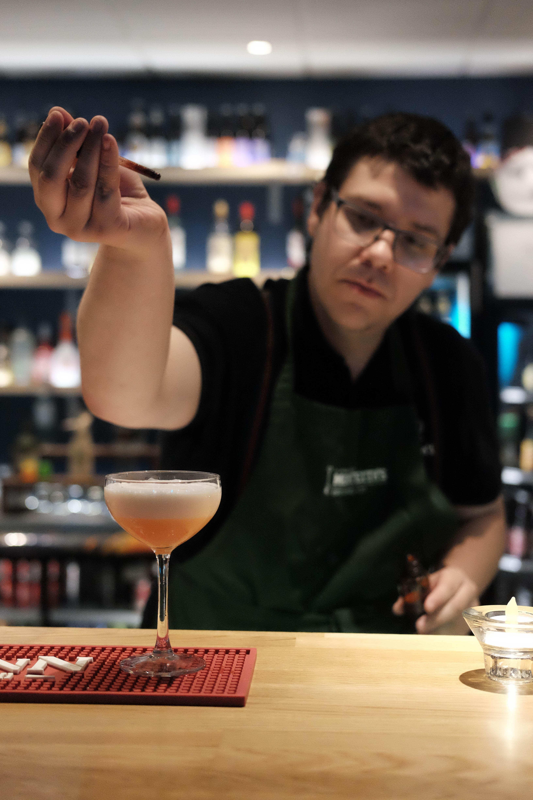

Sebastian Porling

Språk
Svenska
Engelska
Certifikat
STAD
2015 - 2020
Körkort
2013
Hobbies
Spelar diverse instrument
Gitarr, Dragspel, Ukelele, Mandolin och andra stränginstrument
Tränar, Gym och springa
Läser mycket sci-fi
Gillar att kolla på film och serier
Arbete
Biblioteksvärd - KTH
okt 2017 - Nuvarande
Bartender - Bar Replik
jun 2017 - dec 2017
Speditör - SKF
jun 2014 - aug 2014, jun 2015 - aug 2015
Arbetsuppgifter som fakturering, bokning av fraktbolag för export, handha fraktdokument, tullbehandlingar och remburser. Vissa kundkontakter på engelska har förekommit.
Föreläsare - Bessemerskolan
jun 2013 - jun 2013
Höll i föreläsningar och övningar i grundläggande programmering och webbutveckling för ungdomar som skulle börja nian i högstadiet.
Volontär arbete
Sektionen för Informations- och Nanoteknik
Ordförande
2018 - Nuvarande
Ordförande för ideell förening med cirka 500 medlemmar. Ansvaret innebär att vara firmatecknare, ekonomiskt ansvarig och se till att restaurangverksamheten går i vinst och fungerar flytande. Går aktivt på möten med skolan och den övre delen av kåren THS.